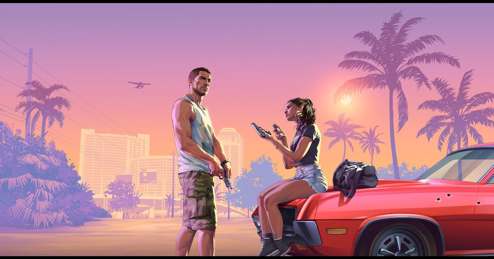

GTA 6 didn't just sell copies — it sold consoles: PS5 sales ran 2.4x last year's pace the week before launch
In the week ending November 14 — five days before Grand Theft Auto VI even launched — U.S. PlayStation 5 sales ran more than 2.4 times last year's pace and Xbox Series sales more than 2.3 times, according to Circana. And that happened after console prices jumped $100 to $150 in a year.

Disclosure: this post contains affiliate links. I earn a commission on qualifying purchases.
Grand Theft Auto VI sold 32.5 million copies by launch and roughly $4 billion on day one. That part we knew. The part that landed this week is what it did to the hardware sitting underneath it: in the week ending November 14 — five days before the game was even playable — U.S. PlayStation 5 unit sales ran more than 2.4 times the same week last year, and Xbox Series X|S sales ran more than 2.3 times, according to Circana retail data shared by analyst Mat Piscatella.
People bought the machine before they could buy the game. The launch-week surge was a pre-launch surge.
The prices went up. The buyers came anyway.
This is the detail that makes the numbers land. A year ago, a standard PS5 cost $550. Today it costs $650. The PS5 Pro went from $750 to $900. Xbox Series X jumped from $650 to $800, and the Series S from $400 to $500. That is $100 to $150 more per box, across the board — and hardware still more than doubled its year-ago pace.
Piscatella himself had predicted before launch that GTA 6 would lift console sales, but maybe not dramatically, precisely because of those prices. The market disagreed. For the biggest release in entertainment history, the price tag was not the obstacle — not having a machine to play it on was.
The PS5 Pro, notably, was not the driver: it made up less than 10 percent of PlayStation unit sales that week. This was the standard PS5 doing the work — the $650 box, bought by people who needed somewhere to play Vice City.
Even the Switch 2 got a lift — without the game
The one console that cannot play GTA 6 also surged. Nintendo Switch 2 hardware sales rose more than 40 percent over the same week last year, per the same Circana data. Eurogamer credits that to The Legend of Zelda: Ocarina of Time remake and a special-edition Zelda Switch 2 console landing in the same window — a reminder that the week before GTA 6 was a big hardware week across the board, not just a two-console story.
Two straight weeks of doubling
The week ending November 14 was not a one-off. Circana data reported the prior week showed the same shape — PS5 sales more than 2.4 times the year-ago week, Xbox more than 2.3 times — for the week ending November 7, as buyers started preparing for the November 19 launch. Two consecutive weeks of hardware running at more than double last year's pace, both of them before the game was out.
The full picture arrives with Circana's November U.S. report in December, which will show whether the lift held through launch week itself and how much of the market moved beyond the one game. But the pre-launch evidence already answers the question the industry was asking all year: whether a single game could still move hardware at these prices. It did — by more than double.
Sources: PS5 And Xbox Series X|S Console Sales Surged Just Before GTA 6 Came Out (GameSpot) · GTA 6 Boosts US PS5 and Xbox Console Sales (Allousa, reporting Eurogamer's coverage of the Circana data) · GTA VI Hype More Than Doubled Sony's US PS5 And Microsoft's Xbox Weekly Sales, Circana Says (TradingView)
Gear up: Razer — mice, keyboards, headsets and laptops.